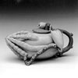
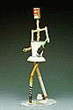

Articles The Mint Museum of Art - The Allan Chasanoff Ceramic Collection
he Mint Museum of Art is located in Charlotte, North Carolina and is comprised of the Mint Museum of Art and the Mint Museum of Craft and Design. The recently donated Chasanoff Collection is currently showing at the Museum of Craft & Design.
Fulfilling it's core mission of public education, the museum is offering these Selections from the Allan Chasanoff Ceramic Collection online. The physical show will run until May 27, 2001, so once inspired by this awesome collection online, there is still time to make your way to Charlotte to see the collection 'in the flesh'. The Collection web site is divided into the main categories of 'Exhibition', 'Artists' and 'Process'. Amongst the artists featured are such masters as Ruth Duckworth, Wayne Higby and Toshiko Takaezu. A short bio of featured artists with related links is also supplied. (This section changes on a monthly basis! A comprehensive list of artists is also available.) The 'Exhibition' page offers an overview as well as a tour (requires Quicktime) of the show. A helpful 'Themes' page and 'Credits' compliment the selection. |
|
| © Ceramics Today |
 The
single largest gift of contemporary ceramics in the history of the museum,
selections from the 403-piece Allan Chasanoff Ceramic Collection, featuring
postwar ceramic art works from Europe, Asia and North America, are the
subject of this major, not to be missed exhibition. There are 120 sculptural,
decorative and functional forms that demonstrate diverse creative approaches
to the medium and subject matter.
The
single largest gift of contemporary ceramics in the history of the museum,
selections from the 403-piece Allan Chasanoff Ceramic Collection, featuring
postwar ceramic art works from Europe, Asia and North America, are the
subject of this major, not to be missed exhibition. There are 120 sculptural,
decorative and functional forms that demonstrate diverse creative approaches
to the medium and subject matter.